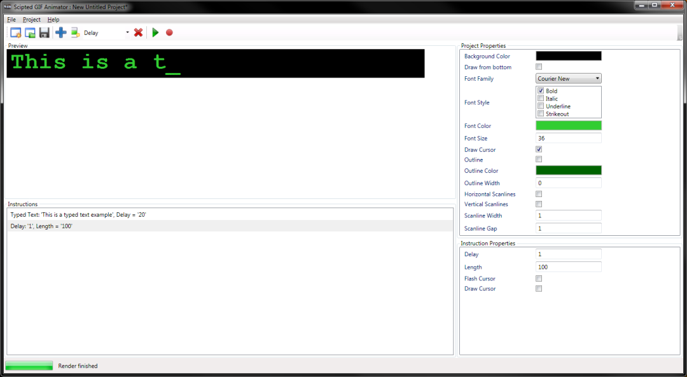

Scripted GIF Builder is an application which turns a simple instruction script into a GIF animation.
It was created to facilitate the text effect in movies where you see the text being typed on the screen. But it has many more applications.

Back to topThis software is provided 'as-is', without any express or implied warranty. In no event will the authors be held liable for any damages arising from the use of this software.
Back to topPlatform: Windows XP, Vista, 7 or 8 with the latest service packs.
Framework: Microsoft .NET Framework 3.5 SP1
Back to topThe latest version is $(Major).$(Minor).$(Build).$(Revision): Download
The changelog is available here: changelog.txt